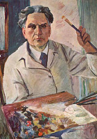
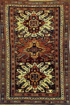

Culture
From ancient times, Armenians have cherished their artistic traditions, which reflect a unique culture and landscape. Aspects of everyday life are expressed in the most artistic fashion, in needlework, embellishments, carvings and design
Architecture is one of the most interesting art forms in Armenia, as, for example, churches bear artistic illustrations in frescoes and reliefs. Sculpting is everywhere - in nearly every city, town, and village in Armenia.
 Armenians love music, and they have been creating exquisite compositions for centuries. Sharakans are
traditional Armenian liturgical songs, which are experiencing a revival today. Distinctive musical
instruments are used to play Armenian folk songs. Sayat Nova, Komitas, and Aram Khachaturian are among
Armenia's best-known musicians and composers. Contemporary music comes in the forms of jazz and pop. The
Komitas Conservatory helps polish future generations of Armenian musicians. Frequent concerts make for
delightful evenings at the Philharmonic, Chamber Music Hall, Opera and Ballet House in Yerevan.
Armenians love music, and they have been creating exquisite compositions for centuries. Sharakans are
traditional Armenian liturgical songs, which are experiencing a revival today. Distinctive musical
instruments are used to play Armenian folk songs. Sayat Nova, Komitas, and Aram Khachaturian are among
Armenia's best-known musicians and composers. Contemporary music comes in the forms of jazz and pop. The
Komitas Conservatory helps polish future generations of Armenian musicians. Frequent concerts make for
delightful evenings at the Philharmonic, Chamber Music Hall, Opera and Ballet House in Yerevan.
 Literature has always played a vital role in Armenia's cultural and national identity. Before the Armenian
alphabet was developed in the 5th century, Armenian tales were passed down by oral tradition and written in
foreign languages. Armenian manuscripts, beautifully illuminated with miniatures, combine Armenia's literary
and illustrative traditions. Christian culture and the invention of the Armenian alphabet by Mesrop
Mashtots, so thoroughly expressive of the language that it has withstood the centuries without any essential
changes, gave new stimuli to the development of unique cultural traditions. There is no better place to view
this literary and artistic history than Yerevan's unique Matenadaran (Institute of Ancient Manuscripts),
which houses an extraordinary collection of 14,000 complete manuscripts, fragments and miniatures. The
oldest parchments date back to the fifth and sixth centuries. The majority of manuscripts are research works
of ancient scholars on theology, astronomy, astrology, alchemy, geography, history, medicine, poetry and
music.
Literature has always played a vital role in Armenia's cultural and national identity. Before the Armenian
alphabet was developed in the 5th century, Armenian tales were passed down by oral tradition and written in
foreign languages. Armenian manuscripts, beautifully illuminated with miniatures, combine Armenia's literary
and illustrative traditions. Christian culture and the invention of the Armenian alphabet by Mesrop
Mashtots, so thoroughly expressive of the language that it has withstood the centuries without any essential
changes, gave new stimuli to the development of unique cultural traditions. There is no better place to view
this literary and artistic history than Yerevan's unique Matenadaran (Institute of Ancient Manuscripts),
which houses an extraordinary collection of 14,000 complete manuscripts, fragments and miniatures. The
oldest parchments date back to the fifth and sixth centuries. The majority of manuscripts are research works
of ancient scholars on theology, astronomy, astrology, alchemy, geography, history, medicine, poetry and
music.
The Armenian Theatre has history of more than 2000 years. In the Matenadaran there are a lot of manuscripts also about the theatre. The Greek historian Plutarch attests, that in 53 B.C. “The Bacchae” of Euripides was staged in Artashat and that the Armenian king Artavazd composed tragedies. The chronicler of the 5th century Hovhan Mandakouni and Davtak Kertogh /7th century/, then Tovma Artsruni /9th-10th centuries/ and others gave valuable information on the Theatre, according to which, the Theatre maintained its existence in further centuries, too. The traditions of the Armenian Theatre are being kept with zeal and responsibility also today.
Armenian painting blossomed in the 19th century. Artists from that period, such as the portrait painter Hakob Hovnatanian and the seascape artist Ivan Aivazovsky, continue to enjoy internationalreputation. In the 20th century, Martiros Saryan captured nature's essence in a new light, and Arshile Gorky greatly influenced a generation of young American artists in New York, while Carzou and Jansem found fame and fortune painting in France. A visit to Saryan Park will bring you in touch with today's Armenian artists..
The Caucasus region and Armenia in particular have been cited by scholars as the place where rug and carpet weaving originated. Armenians continue this tradition, and one can find many shops specializing in fine new and old rugs and carpets. At the weekend flea market, rug sellers lay out their eye-catching merchandise filled with appealing colors and designs. At the same market, you will come across loads of charming handicrafts that will be hard to resist purchase. Visitors to Armenia find handmade crafts, Armenian gold, precious and semi-precious stones which inspire jewelers in many regions. Obsidian stone is used for jewelry, desk accessories, and decorative items. Carpet making is not only a fine art, but Kilim weaving, for example, is applied to clothing items, bags, and home furnishings. Wood carvings replicate the ancient stone crosses (khachkars) found throughout the country, and no two are exactly alike. Armenian crafts couple elegant utility and delightful whimsy in textiles, ceramics, metal and woodworking.
Armenia is often referred to as an open air museum. Tourists find over 4,000 historical monuments throughout Armenia, covering various periods of the country's history from prehistoric to Hellenistic times, and from the early to medieval Christian era. The Armenians created their masterpieces during rare periods of peace and relative prosperity over the centuries. Within Yerevan alone there are more than 40 fine arts museums and galleries.